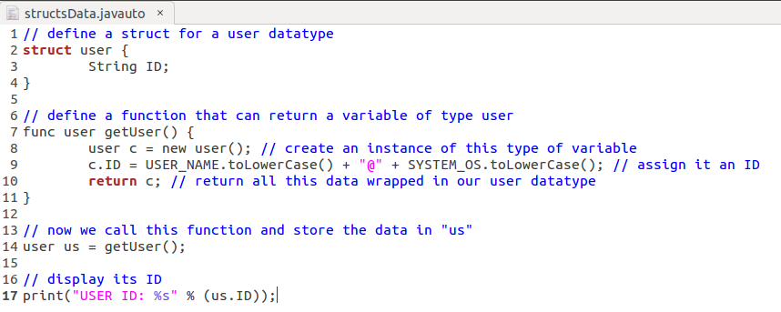
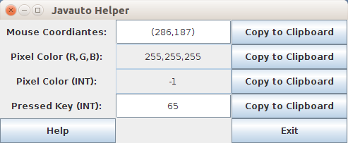
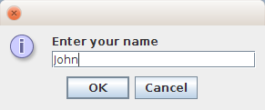

What it's all about
Javauto is an automation language, unique due to its ability to perform mouse clicks, simulate keyboard input, and perform pixel searches. It compiles to executable code that runs on the JVM, so any program you write will be cross platform.

Incredibly powerful yet simple to use.
Javauto was primarily intended to create automation scripts that allows users to automate repetitive tasks. It compiles (transcompiler) to executable code that runs on the JVM, so any program you write will be cross platform. Javauto was designed to be a cross platform AutoIt / AutoHotkey alternative.

Features
- Simulate keystrokes and mouse movements
- Scripts can be compiled into standalone executables
- Create GUI interfaces, including message and input boxes
- To be totally interoperable with Java with no extra work
- User Defined Functions
- Perform pixel searches
- Structs

Getting started might be easier than you think
For instructions on downloading & installing, see getting started.
You can also look at some functions and examples.